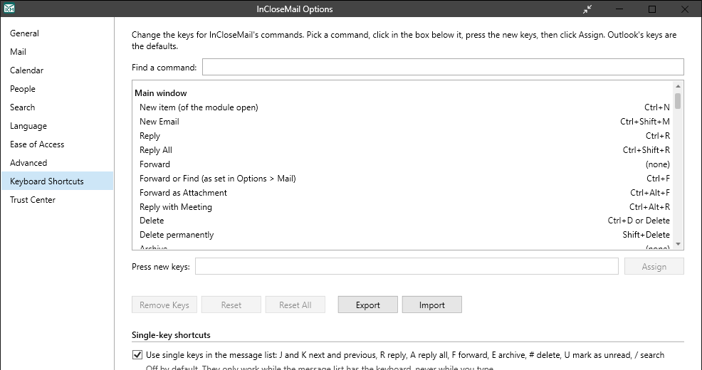
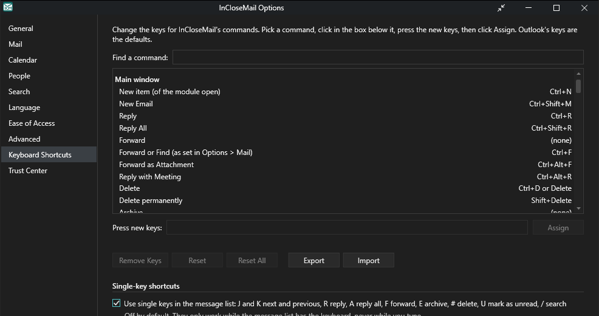

InCloseMail starts with Outlook’s keys, so Ctrl+R, Ctrl+Shift+M and F9 do what you’re used to. Classic Outlook doesn’t let you change them; InCloseMail does.
- Any command, the keys you want: File → Options → Keyboard Shortcuts lists the commands with their keys. Pick one, click in the box below the list, press the new keys and click Assign. Find a command narrows the list as you type.
- In every window: the list has the main window’s commands, a message opened in its own window (Reply, Delete, Print and more) writing a message (Send, Check Names, Spelling & Grammar, Bold, Italic, Underline, alignment, bullets, indents, font size and more) and an appointment, contact or task in its window (Save & Close, Delete, Check Names, Recurrence). The same keys can do something different in each, as Ctrl+M does in Outlook. Your Quick Steps’ and color categories’ keys are listed too, so you can look them up.




- No clashes: if another command already has the keys you pressed, InCloseMail tells you before it moves them to the command you picked.
- Outlook’s keys are one click away: Remove Keys leaves a command without any, Reset gives it Outlook’s keys back, and Reset All does that for every command.
- Single keys, if you want them: turn on J and K for the next and previous message, R reply, A reply all, F forward, E archive, # delete, U mark as unread and / search. They’re off by default, and only work while the message list has the keyboard, never while you type.
- On every PC: your keys are kept with your other settings, so they come with you to your other PCs.
- Export and Import: save your keys to a file and give it to a colleague, or keep it as a copy. Import puts the file’s keys in the list, and OK keeps them.
Missing something you used in Outlook? Choose Help → Suggest a Feature in the app. Found a bug? Choose Help → Report a Bug.